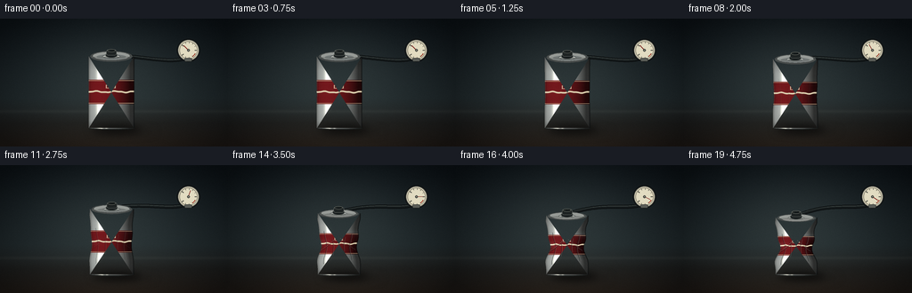
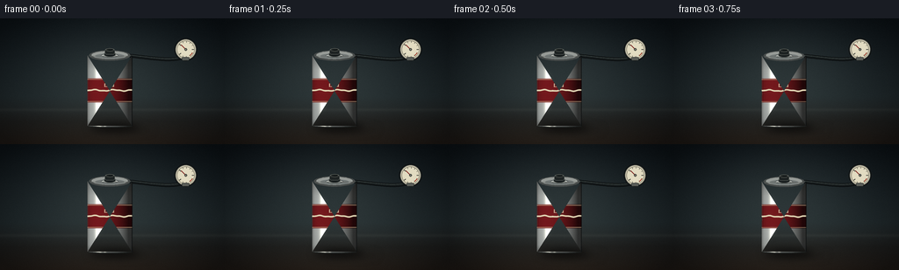

CODING AGENTS AS PIXEL WORLD MODELS
traex/DeepSeek-V4.1-Flash · mechanics_0022
点击播放 · 原生 RGB 像素
逐轮保存的候选
回放视频、检查图与代码变化。
每份候选均可单独播放。实际图片检查记录在下方工具轨迹中。
候选 01播放与检查图
点击播放 · 原生 RGB 像素


展开代码变化
--- 上一保存版本
+++ 本次保存版本
@@ -0,0 +1,661 @@
+from __future__ import annotations
+
+import math
+from pathlib import Path
+
+import numpy as np
+from PIL import Image, ImageDraw, ImageFilter
+
+import artifact_io
+
+
+WIDTH = 256
+HEIGHT = 144
+FRAME_COUNT = 20
+FPS = 4.0
+SCALE = 4
+RW = WIDTH * SCALE
+RH = HEIGHT * SCALE
+
+CX = 500
+BOTTOM_Y = 492
+BASE_RADIUS = 102
+
+
+def clamp01(value: float) -> float:
+ return max(0.0, min(1.0, value))
+
+
+def smoothstep(value: float) -> float:
+ value = clamp01(value)
+ return value * value * (3.0 - 2.0 * value)
+
+
+def lerp(a, b, t):
+ return a + (b - a) * t
+
+
+def vacuum_curve(frame_index: int) -> float:
+ """A slow start followed by a forceful final collapse."""
+ p = frame_index / (FRAME_COUNT - 1)
+ z = (p - 0.645) / 0.135
+ raw = 1.0 / (1.0 + math.exp(-z))
+ low = 1.0 / (1.0 + math.exp(0.645 / 0.135))
+ high = 1.0 / (1.0 + math.exp((0.645 - 1.0) / 0.135))
+ q = (raw - low) / (high - low)
+ return clamp01(0.035 * smoothstep(p / 0.42) + 0.965 * q)
+
+
+def gaussian(value, center: float, width: float):
+ return np.exp(-((value - center) / width) ** 2)
+
+
+def make_background() -> np.ndarray:
+ yy, xx = np.mgrid[0:RH, 0:RW].astype(np.float32)
+ x = xx / RW
+ y = yy / RH
+
+ top = np.array([13.0, 20.0, 25.0], dtype=np.float32)
+ middle = np.array([31.0, 40.0, 43.0], dtype=np.float32)
+ lower = np.array([37.0, 31.0, 27.0], dtype=np.float32)
+
+ upper_t = np.clip(y / 0.62, 0.0, 1.0)[..., None]
+ lower_t = np.clip((y - 0.62) / 0.38, 0.0, 1.0)[..., None]
+ image = top * (1.0 - upper_t) + middle * upper_t
+ image = image * (1.0 - lower_t) + lower * lower_t
+
+ # Broad studio light and a darker rim keep the small frame dimensional.
+ glow = np.exp(
+ -(
+ ((x - 0.47) / 0.37) ** 2
+ + ((y - 0.40) / 0.48) ** 2
+ )
+ )
+ image += glow[..., None] * np.array([18.0, 19.0, 17.0], dtype=np.float32)
+
+ table = np.clip((y - 0.735) / 0.08, 0.0, 1.0)
+ image *= (1.0 - 0.16 * table[..., None])
+ table_sheen = np.clip((y - 0.74) / 0.24, 0.0, 1.0) * np.exp(
+ -((x - 0.47) / 0.52) ** 2
+ )
+ image += table_sheen[..., None] * np.array([11.0, 8.0, 5.0], dtype=np.float32)
+
+ horizon = np.exp(-((y - 0.725) / 0.012) ** 2)
+ image += horizon[..., None] * np.array([7.0, 7.0, 6.0], dtype=np.float32)
+
+ # Very fine texture prevents the gradients from looking synthetic.
+ rng = np.random.default_rng(27)
+ grain = rng.normal(0.0, 1.25, (RH, RW, 1)).astype(np.float32)
+ image += grain
+
+ vignette = 1.0 - 0.42 * np.clip(
+ ((x - 0.50) / 0.63) ** 2 + ((y - 0.50) / 0.68) ** 2,
+ 0.0,
+ 1.0,
+ )
+ image *= vignette[..., None]
+ return np.clip(image, 0.0, 255.0)
+
+
+BACKGROUND = make_background()
+
+
+def soft_shadow(image: np.ndarray, cx: float, cy: float, rx: float, ry: float, strength: float):
+ mask = Image.new("L", (RW, RH), 0)
+ draw = ImageDraw.Draw(mask)
+ draw.ellipse(
+ (round(cx - rx), round(cy - ry), round(cx + rx), round(cy + ry)),
+ fill=255,
+ )
+ mask = mask.filter(ImageFilter.GaussianBlur(17))
+ alpha = np.asarray(mask, dtype=np.float32) / 255.0 * strength
+ image *= (1.0 - alpha[..., None] * 0.80)
+ return image
+
+
+def can_geometry(q: float, frame_index: int):
+ height = 322.0 * (1.0 - 0.205 * q)
+ top_y = BOTTOM_Y - height
+ center_shift = 3.2 * q * math.sin(frame_index * 0.72 + 0.4)
+ cx = CX + center_shift
+
+ def half_width(v: float, side: int) -> float:
+ v = clamp01(v)
+ waist = 0.225 * q * gaussian(v, 0.46, 0.155)
+ low_dent = 0.080 * q * gaussian(v, 0.705, 0.090)
+ shoulder_dent = 0.055 * q * gaussian(v, 0.805, 0.085)
+ low_bulge = 0.035 * q * gaussian(v, 0.225, 0.085)
+ top_bulge = 0.018 * q * gaussian(v, 0.905, 0.045)
+ asym = side * 0.016 * q * math.sin(v * 13.0 + 0.8)
+ factor = (
+ 1.0
+ - 0.085 * q
+ - waist
+ - low_dent
+ - shoulder_dent
+ + low_bulge
+ + top_bulge
+ + asym
+ )
+ # The rim and base retain more of their original diameter.
+ factor = max(0.54, factor)
+ return BASE_RADIUS * factor
+
+ return {
+ "cx": cx,
+ "top_y": top_y,
+ "height": height,
+ "half_width": half_width,
+ "top_radius": BASE_RADIUS * (0.925 - 0.075 * q),
+ }
+
+
+def draw_hose_and_gauge(image: Image.Image, geom: dict, q: float, frame_index: int):
+ draw = ImageDraw.Draw(image, "RGBA")
+ cx = geom["cx"]
+ top_y = geom["top_y"]
+
+ gauge_x = 846
+ gauge_y = 142
+ gauge_r = 45
+
+ # Vacuum line: a dark rubber hose with a narrow reflected highlight.
+ p0 = (gauge_x - 5, gauge_y + 35)
+ p1 = (758, 204)
+ p2 = (656, 170 - 8 * q)
+ p3 = (cx, top_y - 5)
+ points = []
+ for i in range(56):
+ t = i / 55.0
+ omt = 1.0 - t
+ x = (
+ omt**3 * p0[0]
+ + 3 * omt**2 * t * p1[0]
+ + 3 * omt * t**2 * p2[0]
+ + t**3 * p3[0]
+ )
+ y = (
+ omt**3 * p0[1]
+ + 3 * omt**2 * t * p1[1]
+ + 3 * omt * t**2 * p2[1]
+ + t**3 * p3[1]
+ )
+ points.append((x, y))
+
+ draw.line(points, fill=(7, 10, 11, 255), width=17, joint="curve")
+ draw.line(points, fill=(23, 28, 29, 255), width=12, joint="curve")
+ draw.line(
+ [(x - 1.5, y - 3.0) for x, y in points],
+ fill=(59, 67, 65, 155),
+ width=3,
+ joint="curve",
+ )
+
+ # Gauge body.
+ draw.ellipse(
+ (gauge_x - gauge_r - 7, gauge_y - gauge_r - 7, gauge_x + gauge_r + 7, gauge_y + gauge_r + 7),
+ fill=(12, 15, 16, 255),
+ )
+ draw.ellipse(
+ (gauge_x - gauge_r - 3, gauge_y - gauge_r - 3, gauge_x + gauge_r + 3, gauge_y + gauge_r + 3),
+ fill=(67, 70, 66, 255),
+ )
+ draw.ellipse(
+ (gauge_x - gauge_r, gauge_y - gauge_r, gauge_x + gauge_r, gauge_y + gauge_r),
+ fill=(201, 195, 172, 255),
+ )
+ draw.ellipse(
+ (gauge_x - gauge_r + 5, gauge_y - gauge_r + 5, gauge_x + gauge_r - 5, gauge_y + gauge_r - 5),
+ fill=(218, 212, 187, 255),
+ outline=(103, 99, 85, 255),
+ width=2,
+ )
+
+ for index in range(11):
+ angle = math.radians(-140.0 + index * 28.0)
+ r0 = gauge_r - 8
+ r1 = gauge_r - (17 if index % 5 == 0 else 13)
+ draw.line(
+ (
+ gauge_x + math.cos(angle) * r0,
+ gauge_y + math.sin(angle) * r0,
+ gauge_x + math.cos(angle) * r1,
+ gauge_y + math.sin(angle) * r1,
+ ),
+ fill=(45, 47, 43, 255),
+ width=2 if index % 5 else 3,
+ )
+
+ # Red danger arc grows as the pressure falls.
+ arc_box = (
+ gauge_x - gauge_r + 10,
+ gauge_y - gauge_r + 10,
+ gauge_x + gauge_r - 10,
+ gauge_y + gauge_r - 10,
+ )
+ draw.arc(arc_box, 26, 56, fill=(152, 52, 36, 230), width=4)
+
+ needle_angle = math.radians(lerp(-136.0, 34.0, smoothstep(q)))
+ draw.line(
+ (
+ gauge_x - math.cos(needle_angle) * 4,
+ gauge_y - math.sin(needle_angle) * 4,
+ gauge_x + math.cos(needle_angle) * (gauge_r - 16),
+ gauge_y + math.sin(needle_angle) * (gauge_r - 16),
+ ),
+ fill=(116, 28, 24, 255),
+ width=3,
+ )
+ draw.ellipse(
+ (gauge_x - 6, gauge_y - 6, gauge_x + 6, gauge_y + 6),
+ fill=(48, 50, 46, 255),
+ )
+ draw.ellipse(
+ (gauge_x - 3, gauge_y - 3, gauge_x + 3, gauge_y + 3),
+ fill=(126, 126, 115, 255),
+ )
+
+ # A short polished fitting joins the hose to the gauge.
+ draw.rounded_rectangle(
+ (gauge_x - 18, gauge_y + 35, gauge_x + 16, gauge_y + 51),
+ radius=6,
+ fill=(89, 92, 87, 255),
+ outline=(31, 34, 33, 255),
+ width=2,
+ )
+
+
+def body_mask_and_shading(geom: dict, q: float, frame_index: int):
+ cx = geom["cx"]
+ top_y = geom["top_y"]
+ bottom_y = BOTTOM_Y
+ height = geom["height"]
+ half_width = geom["half_width"]
+
+ mask_image = Image.new("L", (RW, RH), 0)
+ mask_draw = ImageDraw.Draw(mask_image)
+ rows = 280
+ left_points = []
+ right_points = []
+ for index in range(rows + 1):
+ v = index / rows
+ y = bottom_y - v * height
+ left_points.append((cx - half_width(v, -1), y))
+ right_points.append((cx + half_width(v, 1), y))
+
+ bottom_arc = []
+ base_half = half_width(0.0, 0)
+ for index in range(1, 24):
+ angle = math.pi * index / 24.0
+ bottom_arc.append(
+ (
+ cx + math.cos(angle) * base_half,
+ bottom_y + math.sin(angle) * 7.0,
+ )
+ )
+ polygon = left_points + bottom_arc + list(reversed(right_points))
+ mask_draw.polygon(polygon, fill=255)
+
+ mask = np.asarray(mask_image, dtype=np.uint8) > 0
+ yy, xx = np.mgrid[0:RH, 0:RW].astype(np.float32)
+ v = np.clip((bottom_y - yy) / height, 0.0, 1.0)
+
+ row_left = np.empty(RH, dtype=np.float32)
+ row_right = np.empty(RH, dtype=np.float32)
+ for y in range(RH):
+ vv = clamp01((bottom_y - y) / height)
+ row_left[y] = cx - half_width(vv, -1)
+ row_right[y] = cx + half_width(vv, 1)
+
+ left = row_left[:, None]
+ right = row_right[:, None]
+ row_cx = (left + right) * 0.5
+ half = np.maximum((right - left) * 0.5, 1.0)
+ u = np.clip((xx - row_cx) / half, -1.0, 1.0)
+
+ normal_z = np.sqrt(np.maximum(0.0, 1.0 - u * u))
+ light = np.clip(0.82 * normal_z - 0.55 * u, 0.0, 1.0)
+ diffuse = 0.29 + 0.76 * light
+ vertical = 0.80 + 0.20 * np.maximum(np.sin(np.pi * v), 0.0) ** 0.35
+ rim_darken = 0.66 + 0.34 * np.clip(normal_z / 0.38, 0.0, 1.0)
+ base = np.array([164.0, 168.0, 165.0], dtype=np.float32)
+ body = base[None, None, :] * (
+ diffuse[..., None] * vertical[..., None] * rim_darken[..., None]
+ )
+
+ # Two soft longitudinal highlights read as brushed aluminium.
+ spec_wide = np.exp(-((u + 0.49) / 0.13) ** 2) * (0.90 + 0.10 * np.sin(v * 8.0))
+ spec_narrow = np.exp(-((u + 0.22) / 0.060) ** 2) * 0.54
+ body += (spec_wide + spec_narrow)[..., None] * np.array(
+ [198.0, 193.0, 174.0], dtype=np.float32
+ )
+
+ # Red label panel with a cream wave. It is shaded by the same cylinder normals.
+ label_top = 0.675
+ label_bottom = 0.335
+ in_label = (v < label_top) & (v > label_bottom)
+ panel_t = (v - label_bottom) / (label_top - label_bottom)
+ label_color = np.array([111.0, 24.0, 28.0], dtype=np.float32)
+ label_shade = (
+ diffuse[..., None] * (0.82 + 0.18 * vertical[..., None]) * rim_darken[..., None]
+ )
+ label_rgb = label_color[None, None, :] * label_shade
+
+ wave_center = 0.505 + 0.025 * np.sin(u * 7.2 + 0.3) + 0.010 * np.sin(u * 17.0)
+ wave = (np.abs(panel_t - wave_center) < 0.028) & in_label
+ wave_edge = (np.abs(panel_t - wave_center) < 0.043) & in_label & ~wave
+ label_rgb = np.where(wave[..., None], np.array([226.0, 215.0, 181.0]), label_rgb)
+ label_rgb = np.where(
+ wave_edge[..., None],
+ label_rgb * 0.66 + np.array([191.0, 178.0, 147.0]) * 0.34,
+ label_rgb,
+ )
+ edge_band = (
+ (np.abs(panel_t - 0.035) < 0.018)
+ | (np.abs(panel_t - 0.965) < 0.018)
+ ) & in_label
+ label_rgb = np.where(
+ edge_band[..., None],
+ label_rgb * 0.44 + np.array([211.0, 196.0, 157.0]) * 0.56,
+ label_rgb,
+ )
+
+ # A small geometric cola mark near the center, clipped by the can silhouette.
+ mark = (
+ in_label
+ & (np.abs(u + 0.03) < 0.22)
+ & (np.abs(panel_t - 0.72) < 0.075)
+ )
+ label_rgb = np.where(
+ mark[..., None],
+ label_rgb * 0.24 + np.array([224.0, 211.0, 178.0]) * 0.76,
+ label_rgb,
+ )
+ inner_mark = (
+ in_label
+ & (np.abs(u + 0.03) < 0.17)
+ & (np.abs(panel_t - 0.72) < 0.048)
+ )
+ label_rgb = np.where(inner_mark[..., None], label_color * label_shade * 0.92, label_rgb)
+
+ body = np.where(in_label[..., None], label_rgb, body)
+
+ # The shoulder and base are slightly darker, as in a real drawn can.
+ shoulder = np.clip((v - 0.80) / 0.20, 0.0, 1.0)
+ base_dark = np.clip((0.10 - v) / 0.10, 0.0, 1.0)
+ body *= (1.0 - 0.16 * shoulder - 0.18 * base_dark)[..., None]
+
+ # A few broad buckling facets create asymmetrical reflected light.
+ if q > 0.025:
+ facet_a = gaussian(v, 0.51 + 0.018 * math.sin(frame_index), 0.045)
+ facet_b = gaussian(v, 0.67, 0.055)
+ side_a = np.clip((-u - 0.30) / 0.52, 0.0, 1.0)
+ side_b = np.clip((u - 0.18) / 0.52, 0.0, 1.0)
+ body += (
+ q
+ * (facet_a * side_a * 24.0 + facet_b * side_b * 16.0)
+ )[..., None] * np.array([0.82, 0.88, 0.90], dtype=np.float32)
+
+ return mask, np.clip(body, 0.0, 255.0), polygon
+
+
+def draw_can(image: Image.Image, geom: dict, q: float, frame_index: int):
+ cx = geom["cx"]
+ top_y = geom["top_y"]
+ half_width = geom["half_width"]
+
+ mask, body, polygon = body_mask_and_shading(geom, q, frame_index)
+ body_image = Image.fromarray(body.astype(np.uint8), "RGB")
+ image.paste(body_image, (0, 0), Image.fromarray(mask.astype(np.uint8) * 255, "L"))
+
+ overlay = Image.new("RGBA", (RW, RH), (0, 0, 0, 0))
+ draw = ImageDraw.Draw(overlay, "RGBA")
+
+ # Soft shadow on the can's right edge and a highlight on its left edge.
+ edge_samples = []
+ for index in range(80):
+ v = index / 79.0
+ y = BOTTOM_Y - v * geom["height"]
+ edge_samples.append((cx + half_width(v, 1), y))
+ draw.line(edge_samples, fill=(4, 7, 8, 115), width=4, joint="curve")
+ edge_samples = []
+ for index in range(80):
+ v = index / 79.0
+ y = BOTTOM_Y - v * geom["height"]
+ edge_samples.append((cx - half_width(v, -1) + 2.0, y))
+ draw.line(edge_samples, fill=(211, 213, 202, 54), width=2, joint="curve")
+
+ # Vacuum creases become prominent as the wall buckles.
+ if q > 0.06:
+ crease_specs = [
+ (-0.70, 0.17, 0.71, 0.045, -0.045),
+ (0.63, 0.23, 0.66, -0.035, 0.035),
+ (-0.31, 0.31, 0.57, 0.022, -0.028),
+ (0.29, 0.38, 0.61, -0.020, 0.022),
+ ]
+ for side_u, v0, v1, lean_a, lean_b in crease_specs:
+ line = []
+ for index in range(34):
+ t = index / 33.0
+ v = lerp(v0, v1, t)
+ side = 1 if side_u > 0 else -1
+ hw = half_width(v, side)
+ uu = side_u + lean_a * math.sin(t * math.pi) + lean_b * t
+ line.append((cx + uu * hw, BOTTOM_Y - v * geom["height"]))
+ alpha = int(118 * clamp01((q - 0.06) / 0.72))
+ draw.line(line, fill=(19, 24, 24, alpha), width=4, joint="curve")
+ draw.line(
+ [(x + 2.0, y) for x, y in line],
+ fill=(225, 224, 209, int(alpha * 0.48)),
+ width=2,
+ joint="curve",
+ )
+
+ if q > 0.30:
+ # Two diagonal snap lines make the final frames feel forceful.
+ for direction in (-1, 1):
+ pts = []
+ for index in range(24):
+ t = index / 23.0
+ v = lerp(0.40, 0.59, t)
+ hw = half_width(v, direction)
+ uu = direction * lerp(0.93, 0.10, t)
+ pts.append((cx + uu * hw, BOTTOM_Y - v * geom["height"]))
+ alpha = int(96 * clamp01((q - 0.30) / 0.60))
+ draw.line(pts, fill=(12, 17, 18, alpha), width=5, joint="curve")
+ draw.line(
+ [(x - 2.0, y - 1.0) for x, y in pts],
+ fill=(230, 226, 209, int(alpha * 0.62)),
+ width=2,
+ joint="curve",
+ )
+
+ image.alpha_composite(overlay)
+
+ # Top ellipse: the lid sinks and wrinkles as pressure falls.
+ top = Image.new("RGBA", (RW, RH), (0, 0, 0, 0))
+ top_draw = ImageDraw.Draw(top, "RGBA")
+ tr = geom["top_radius"]
+ ellipse_h = tr * (0.255 - 0.050 * q)
+ lid_cx = cx + 1.5 * q * math.sin(frame_index * 0.8)
+ lid_cy = top_y + 2.0 * q
+
+ outer = []
+ for index in range(80):
+ angle = 2.0 * math.pi * index / 80
+ wobble = 1.0 + 0.015 * q * math.sin(angle * 5 + 0.6)
+ outer.append(
+ (
+ lid_cx + math.cos(angle) * tr * wobble,
+ lid_cy + math.sin(angle) * ellipse_h * wobble,
+ )
+ )
+ top_draw.polygon(outer, fill=(71, 75, 74, 255))
+
+ inner = []
+ for index in range(72):
+ angle = 2.0 * math.pi * index / 72
+ wobble = 1.0 + 0.020 * q * math.sin(angle * 4 - 0.3)
+ inner.append(
+ (
+ lid_cx + math.cos(angle) * tr * 0.875 * wobble,
+ lid_cy - ellipse_h * 0.10 + math.sin(angle) * ellipse_h * 0.76 * wobble,
+ )
+ )
+ top_draw.polygon(inner, fill=(151, 155, 151, 255))
+ top_draw.ellipse(
+ (
+ lid_cx - tr * 0.70,
+ lid_cy - ellipse_h * 0.36 + 4.0 * q,
+ lid_cx + tr * 0.70,
+ lid_cy + ellipse_h * 0.58 + 4.0 * q,
+ ),
+ fill=(114 + int(24 * q), 120 + int(20 * q), 119 + int(18 * q), 255),
+ )
+
+ # Pull tab.
+ tab_w = tr * 0.42
+ tab_h = ellipse_h * 0.30
+ top_draw.ellipse(
+ (
+ lid_cx - tab_w,
+ lid_cy - tab_h - 1.0,
+ lid_cx + tab_w,
+ lid_cy + tab_h + 1.0,
+ ),
+ fill=(177, 181, 176, 255),
+ outline=(64, 69, 69, 210),
+ width=2,
+ )
+ top_draw.ellipse(
+ (
+ lid_cx - tab_w * 0.55,
+ lid_cy - tab_h * 0.44,
+ lid_cx + tab_w * 0.55,
+ lid_cy + tab_h * 0.44,
+ ),
+ fill=(88, 94, 93, 255),
+ )
+ top_draw.line(
+ (
+ lid_cx - tr * 0.92,
+ lid_cy + ellipse_h * 0.10,
+ lid_cx + tr * 0.92,
+ lid_cy + ellipse_h * 0.10,
+ ),
+ fill=(224, 222, 207, 95),
+ width=2,
+ )
+ image.alpha_composite(top)
+
+ # Black vacuum fitting and metal clamp at the center of the sealed lid.
+ fitting = Image.new("RGBA", (RW, RH), (0, 0, 0, 0))
+ fit_draw = ImageDraw.Draw(fitting, "RGBA")
+ port_x = lid_cx
+ port_y = lid_cy - 2.0
+ fit_draw.ellipse(
+ (port_x - 27, port_y - 17, port_x + 27, port_y + 9),
+ fill=(22, 27, 28, 255),
+ outline=(91, 96, 92, 255),
+ width=3,
+ )
+ fit_draw.rounded_rectangle(
+ (port_x - 23, port_y - 29, port_x + 23, port_y - 3),
+ radius=9,
+ fill=(30, 35, 35, 255),
+ outline=(91, 96, 92, 255),
+ width=2,
+ )
+ fit_draw.ellipse(
+ (port_x - 18, port_y - 31, port_x + 18, port_y - 18),
+ fill=(13, 18, 19, 255),
+ outline=(106, 109, 101, 255),
+ width=2,
+ )
+ fit_draw.line(
+ (port_x - 12, port_y - 25, port_x + 5, port_y - 27),
+ fill=(84, 92, 89, 185),
+ width=2,
+ )
+ image.alpha_composite(fitting)
+
+ # A narrow dark base band anchors the can to the table.
+ base_overlay = Image.new("RGBA", (RW, RH), (0, 0, 0, 0))
+ base_draw = ImageDraw.Draw(base_overlay, "RGBA")
+ base_hw = half_width(0.0, 0)
+ base_draw.arc(
+ (
+ cx - base_hw,
+ BOTTOM_Y - 7,
+ cx + base_hw,
+ BOTTOM_Y + 7,
+ ),
+ 0,
+ 180,
+ fill=(30, 34, 33, 225),
+ width=4,
+ )
+ image.alpha_composite(base_overlay)
+
+
+def render_frame(frame_index: int) -> np.ndarray:
+ q = vacuum_curve(frame_index)
+ geom = can_geometry(q, frame_index)
+
+ image = Image.fromarray(np.clip(BACKGROUND, 0, 255).astype(np.uint8)).convert("RGBA")
+
+ # Contact shadow plus a long, soft cast shadow from the key light.
+ image_array = np.asarray(image, dtype=np.float32)
+ image_array = soft_shadow(
+ image_array,
+ CX + 20 + 7 * q,
+ BOTTOM_Y + 7,
+ BASE_RADIUS * (1.10 - 0.08 * q),
+ 19.0,
+ 0.72,
+ )
+ image_array = soft_shadow(
+ image_array,
+ CX + 70,
+ BOTTOM_Y + 16,
+ 122.0,
+ 12.0,
+ 0.22,
+ )
+ image = Image.fromarray(np.clip(image_array, 0, 255).astype(np.uint8)).convert("RGBA")
+
+ draw_hose_and_gauge(image, geom, q, frame_index)
+ draw_can(image, geom, q, frame_index)
+
+ # Soft bloom around the metal highlights.
+ array = np.asarray(image.convert("RGB"), dtype=np.float32)
+ luminance = array.mean(axis=2, keepdims=True)
+ highlights = np.clip((luminance - 168.0) / 87.0, 0.0, 1.0)
+ highlight_image = Image.fromarray((highlights[..., 0] * 255).astype(np.uint8), "L")
+ bloom = np.asarray(
+ highlight_image.filter(ImageFilter.GaussianBlur(9.0)),
+ dtype=np.float32,
+ ) / 255.0
+ array += bloom[..., None] * np.array([21.0, 20.0, 17.0], dtype=np.float32)
+
+ # A faint moving grain keeps successive timelapse frames from feeling sterile.
+ rng = np.random.default_rng(900 + frame_index)
+ array += rng.normal(0.0, 1.5, (RH, RW, 1)).astype(np.float32)
+
+ array = np.clip(array, 0.0, 255.0).astype(np.uint8)
+ small = Image.fromarray(array, "RGB").resize(
+ (WIDTH, HEIGHT),
+ Image.Resampling.LANCZOS,
+ )
+ return np.asarray(small, dtype=np.uint8)
+
+
+def main():
+ case_dir = Path(__file__).resolve().parent
+ frames = np.stack([render_frame(index) for index in range(FRAME_COUNT)])
+ artifact_io.save(frames, case_dir)
+ print(f"saved {FRAME_COUNT} frames to {case_dir}")
+
+
+if __name__ == "__main__":
+ main()
可观测工具轨迹
实际执行的命令与返回图片。
命令 1exit 0
/bin/bash -c "pwd && rg --files -g 'prompt.txt' -g 'GENERATION_RULES.md' -g 'task_spec.json' -g '"'!node_modules'"'"
命令 2exit 0
/bin/bash -c 'ls -la'
命令 3exit 0
/bin/bash -c "find . -maxdepth 2 -type f | sort | sed -n '1,200p'"
命令 4exit 0
/bin/bash -c 'cat GENERATION_RULES.md'
命令 5exit 0
/bin/bash -c 'cat task_spec.json'
命令 6exit 0
/bin/bash -c 'cat prompt.txt'
命令 7exit 0
/bin/bash -c "sed -n '1,240p' artifact_io.py"
命令 8exit 1
/bin/bash -c 'python generate.py'
命令 9exit 1
/bin/bash -c 'python generate.py'
命令 10exit 0
/bin/bash -c "sed -n '43,55p' generate.py"
命令 11exit 0
/bin/bash -c 'python generate.py'
命令 12exit 1
/bin/bash -c 'command -v chafa || command -v viu || command -v jp2 || command -v img2txt || command -v convert'
命令 13exit 127
/bin/bash -c 'ls -lh frames inspection.png transition_check.png index.html pixels.npz && file frames/00.png index.html'
命令 14exit 0
/bin/bash -c "python - <<'PY'
from PIL import Image
import numpy as np
for i in [0,4,8,12,16,19]:
im=np.array(Image.open(f'frames/{i:02d}.png'))
print(i, 'mean', im.mean((0,1)).round(1), 'range', im.min(), im.max(), 'center', im[40:120,80:180].mean((0,1)).round(1))
PY"命令 15exit 0
/bin/bash -c "python - <<'PY'
from PIL import Image
im=Image.open('inspection.png')
print(im.size, im.mode)
# Report approximate foreground bounds from the central lower half.
import numpy as np
a=np.asarray(im.convert('RGB'))
print(a.shape)
PY"命令 16exit 0
/bin/bash -c "python - <<'PY'
from PIL import Image
import numpy as np
chars=' .:-=+*#%@'
for idx in [0,8,12,19]:
a=np.asarray(Image.open(f'frames/{idx:02d}.png').convert('L'),dtype=float)
a=a.reshape(36,4,64,4).mean((1,3))
print('\\nFRAME',idx)
for row in a:
print(''.join(chars[min(len(chars)-1,int(v/256*len(chars)))] for v in row))
PY"保存候选 1 份；完成命令 16 次；可验证图片返回 0 张。原始 API 响应与完整日志保留在本地。